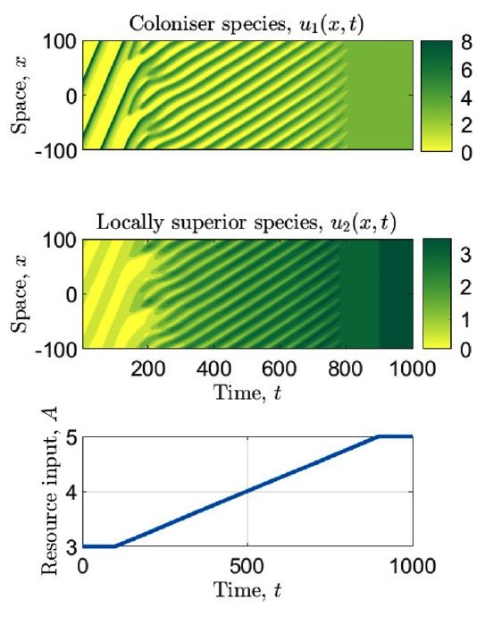

Vegetation patterns in semi-arid ecosystems
in collaboration with Jonathan A. Sherratt
Vegetation patterns are a ubiquitous feature of dryland ecosystems, occurring on all continents except Antarctica. Such mosaics of alternating patches of biomass and bare soil develop as a consequence of a self-organisation principle induced by a positive feedback between local vegetation growth and water redistribution towards areas of high biomass. Patterns occur in many different forms but on sloped terrain, patterns occur as regular stripes.
A detailed understanding of the dynamics of vegetation patterns is of considerable socio-economic importance as they hold valuable information on the health of ecosystems. In particular, changes to a pattern's properties may act as an early warning signal of desertification, a major threat to economies of countries in arid regions. Data acquisition for vegetation patterns is notoriously difficult due to the spatial and temporal scales associated with the ecosystem dynamics. In particular, their recreation in laboratory settings is infeasible. Thus, a powerful tool to overcome these challenges is the use of mathematical models. The theoretical study of dryland ecosystems, in particular continuum approaches utilising PDEs, has thrived over the last two decades.
In our research, we use reaction-advection-diffusion systems based on the Klausmeier model to describe vegetation patterns as periodic travelling waves. We determine conditions for pattern onset, pattern existence and pattern stability to investigate the impact of processes such as nonlocal seed dispersal or temporal rainfall variability on vegetation patterns. Moreover, we use the modelling framework to reveal mechanisms that enable species coexistence despite the competition for a sole limiting resource (water).


Publications:
L. Eigentler, J.A. Sherratt: Long-range seed dispersal stabilises almost stationary patterns in a model for dryland vegetation. J. Math. Biol. 86:15 (2023), DOI: 10.1007/s00285-022-01852-x
L. Eigentler: Species coexistence in resource-limited patterned ecosystems is facilitated by the interplay of spatial self-organisation and intraspecific competition. Oikos, 130.4 (2021), 609--623. DOI: 10.1111/oik.07880. Post-peer-review, pre-copyedit version: 10.1101/2020.01.13.903179
L. Eigentler, J.A. Sherratt: An integrodifference model for vegetation patterns in semi-arid environments with seasonality. J. Math. Biol., 81.3 (2020), 875--904. DOI: 10.1007/s00285-020-01530-w Post-peer-review, pre-copyedit version: arXiv:1911.10964
L. Eigentler: Intraspecific competition in models for vegetation patterns: decrease in resilience to aridity and facilitation of species coexistence. Ecol. Complexity, 42 (2020), 100835. DOI: 10.1016/j.ecocom.2020.100835 Post-peer-review, pre-copyedit version: arXiv:2002.05677
L. Eigentler, J.A. Sherratt: Effects of precipitation intermittency on vegetation patterns in semi-arid landscapes. Physica D , 405 (2020), 132396. DOI: 10.1016/j.physd.2020.132396 Post-peer-review, pre-copyedit version: arXiv:1911.10878
L. Eigentler, J.A. Sherratt: Spatial self-organisation enables species coexistence in a model for savanna ecosystems. J. Theor. Biol., 487 (2020), 110122. DOI: 10.1016/j.jtbi.2019.110122. Post-peer-review, pre-copyedit version: arXiv:1911.10801
L. Eigentler, J.A. Sherratt: Metastability as a coexistence mechanism in a model for dryland vegetation patterns. Bull. Math. Biol., 81.7 (2019), 2290--2322. DOI: 10.1007/s11538-019-00606-z, Post-peer-review, pre-copyedit version: arXiv:1911.11022
L. Eigentler, J.A. Sherratt: Analysis of a model for banded vegetation patterns in semi-arid environments with nonlocal dispersal. J. Math. Biol., 77.3 (2018), 739--763, DOI: 10.1007/s00285-018-1233-y, Post-peer-review, pre-copyedit version: arXiv:1911.11037